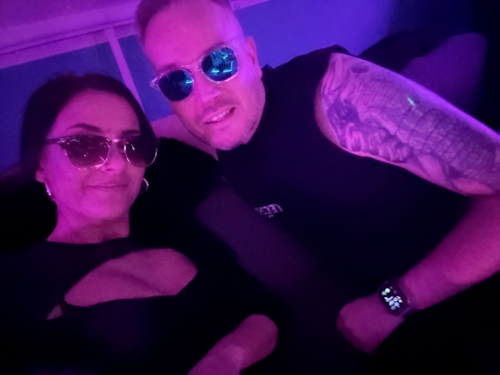
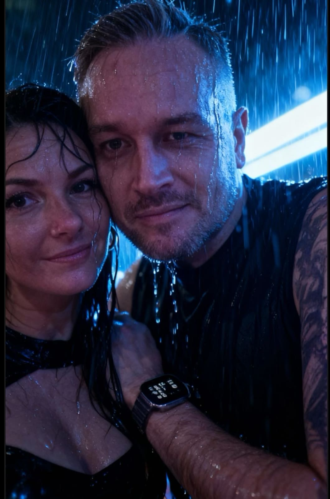

Wir spielen keinen Hintergrund. Wir setzen den Ton.
Wir sind Dr. Gray & Mrs. Dr. Gray: Ehepaar, Duo und zwei unterschiedliche Energien mit einer gemeinsamen Linie. Bei uns trifft Druck auf Nähe, Clubspannung auf Persönlichkeit und Techno auf eine Handschrift, die man nicht nur hört, sondern wiedererkennt.
Unser Sound in drei Bewegungen
Wir wollen nicht geschniegelt wirken, sondern echt. Deshalb bleibt unser Sound zwischen Kontrolle, Emotion, Zug nach vorne und dem Gefühl, dass hinter dem Druck auch Charakter steht.
Driving
Wenn das Set nach vorne will, Bass und Groove aber nie leer wirken sollen.
Melodic
Klangflächen, Spannung und emotionale Momente, ohne weich zu werden.
Peaktime
Intensität mit Haltung, gemacht für Leute, die Techno nicht nur hören, sondern leben.
“Techno mit Herz heißt für uns nicht weich. Es heißt echt, intensiv und verbunden.”
Genau daraus entsteht unser Auftritt: eine Beziehung, die man nicht versteckt, ein Sound, der nicht geschniegelt ist, und ein Vibe, der zwischen Club, Live und Community denselben Kern trägt.

Frische Sets
SoundCloud bleibt unser musikalischer Kern. Hier zeigen wir schnell unseren Stil, bevor es in Bio, TikTok oder den Shop weitergeht.
Emotional Flow
Aktuellster Upload auf SoundCloud, veröffentlicht am 7. Oktober 2025.
Old Dogs are better Raver
Veröffentlicht am 19. September 2025 und klar in unserer rougheren Linie verortet.
SYNCOPATH Part II
Veröffentlicht am 10. September 2025 und direkt an die SYNCOPATH-Reihe angeschlossen.
TikTok & Community
Hier ziehen wir Aufmerksamkeit nicht mit Lautstärke, sondern mit Wiedererkennung: wir live, wir direkt, wir als Duo. Genau daraus entstehen Hooks, Kommentare, Running Gags, Couple-Momente und später sogar Merch-Zeilen.
Freitag gehört uns
Jeden Freitag gehen wir live. Nicht als Routine, sondern als echter Treffpunkt fuer Community, Szene-Talk, Musik und direkte Reaktion.

Hooks mit Haltung
Keine leeren Phrasen. Lieber Zeilen wie ein Blick, der haengen bleibt: frech, clubbig, beziehungsnah und stark genug, um spaeter auch auf einem Shirt zu funktionieren.
Mrs. Dr. Gray im Fokus
Mrs. Dr. Gray ist nicht Beiwerk. Sie bringt eigene Praesenz, eigenen Reiz und genau die feminine Schaerfe rein, die unser Duo unverwechselbar macht.
Merch mit Szene-Attitüde
Unser Shop soll nicht nach Standard-POD aussehen. Wir bauen Herren-, Damen-, Couple- und Unisex-Linien mit Statements, die zu uns passen: klar, frech, clubnah und sauber gesetzt.

Dr. Gray Linie
Vorne klare Techno-Typo, hinten wahlweise das Hauptlogo als sauber gesetzter Backprint. Keine Collage, keine Überlagerung, keine Fremdelemente.

Mrs. Dr. Gray Linie
Mrs. Dr. Gray fuehrt die Damen-Linie sichtbar an. Dazu kommen sexy-serioese Statements, selbstbewusste Hooks und elegantere Club-Pieces, die weiblich bleiben, ohne brav zu wirken.

Unisex & Couple
Bei Unisex-Stücken bleibt der Frontprint clean, während wir hinten zwischen Dr.-Gray- oder Mrs.-Dr.-Gray-Logo wählen. Beide Logos zusammen setzen wir nur bei Couple-Designs ein.
Neue Artikel im Katalog
Startseite und Shop greifen jetzt auf dieselbe Merch-Basis zu. So koennen wir unsere Linien profilnah weiterziehen, ohne dass die Seite auseinanderfaellt oder der Stil kippt.